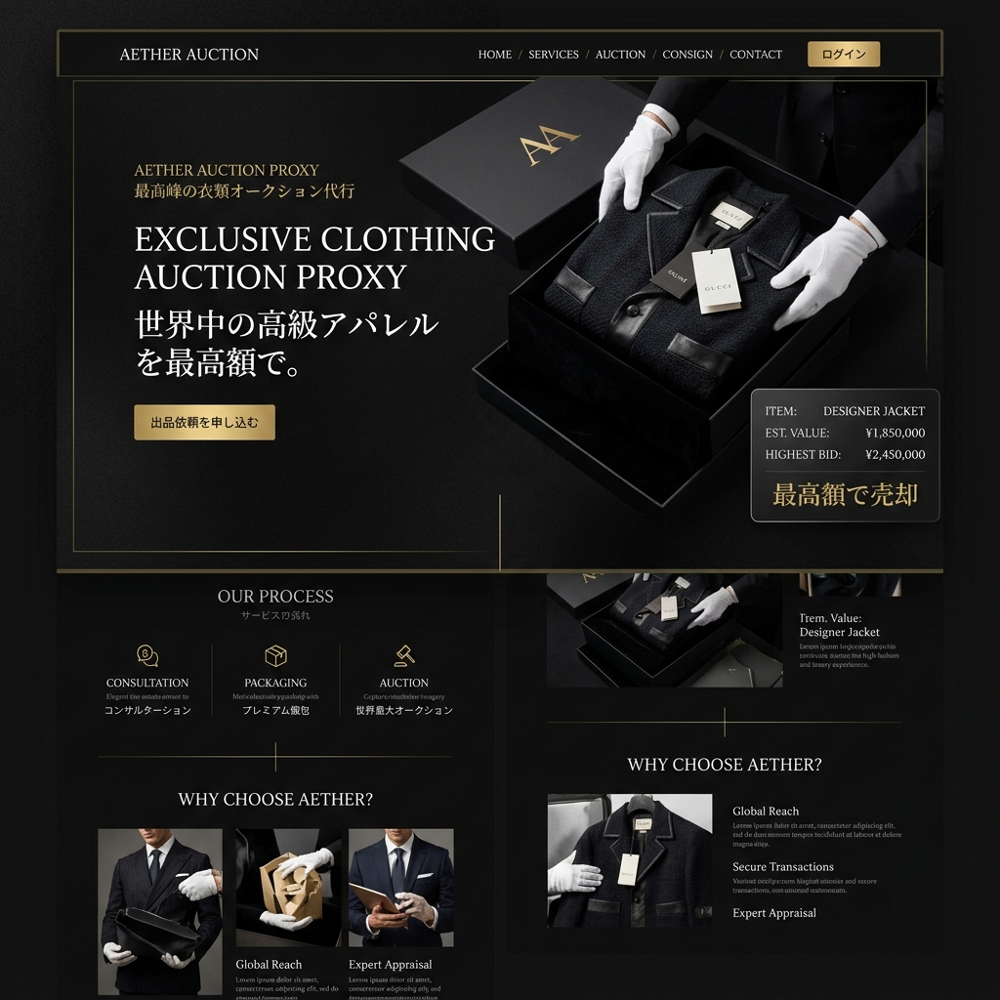

ハッカーの攻撃を、
迷宮入りさせる盾。
あなたの暗号資産とデジタルデータを守る絶対防壁。VAULT PROXYは、Web3の複雑なトランザクションを仲介し、悪意あるスマートコントラクトやフィッシング詐欺からユーザーを物理的に切り離す次世代プロキシサーバーです。

「自己責任」という言葉で放置された危険
Web3の世界は革新的ですが、同時に史上最も危険なダークフォレスト（暗黒の森）です。難解なプログラムに隠された「資金を引き抜く罠」を、一般ユーザーが見破ることは不可能です。私たちは、この無法地帯に安全なゲートウェイを構築します。
署名する前に「未来」を見せるAI
スマートコントラクト・シミュレーター
あなたがメタマスクで「承認」ボタンを押す前に、そのトランザクションがブロックチェーン上でどのような結果をもたらすか（例：NFTが盗まれる等）を仮想環境でシミュレートし、警告します。
動的フィッシングURLブロック
DiscordやXで流れてくる偽のミントサイトを、ドメインの登録日時やUIのクローン率からAIが瞬時に判定。アクセスそのものを遮断します。
マルチシグ・ソーシャルリカバリー
秘密鍵を紛失しても、信頼できる友人やデバイス群（ソーシャルリカバリー）を通じて、安全にウォレットへのアクセスを復旧させるバックアップ機能。
IPアドレスとウォレットの紐付けを断つ
ブロックチェーンは匿名だと思われがちですが、RPCノードを経由する際にあなたのIPアドレスは筒抜けです。VAULT PROXYは、Torネットワークのような多段ルーティングを用いてトラフィックを暗号化・分散させ、物理的な身元を完全に秘匿します。
機関投資家レベルの「コールドストレージ連動」
高額な資産はネットから切り離されたハードウェアウォレットに置きつつ、DeFiでの運用はプロキシ上の仮想ホットウォレットで行う。資産の分離と運用益の追求を、極めてシームレスなUIで両立させます。
Case Study | NFTコレクターの防御ログ
数億円相当のBored Apeを保有するコレクター。彼が偽のエアドロップサイトでうっかり署名をしてしまった瞬間、VAULT PROXYが「Asset Drainer（全資産引き抜き）」のコードを検知。トランザクションを強制ブロックし、一瞬の隙から全財産を守り抜きました。
Web3を、すべての人が歩ける道へ
セキュリティの不安がある限り、マスアダプション（大衆化）は起こりません。私たちは、専門知識がなくても誰もが安全に分散型エコシステムを享受できる、透明で強固なインフラを提供します。